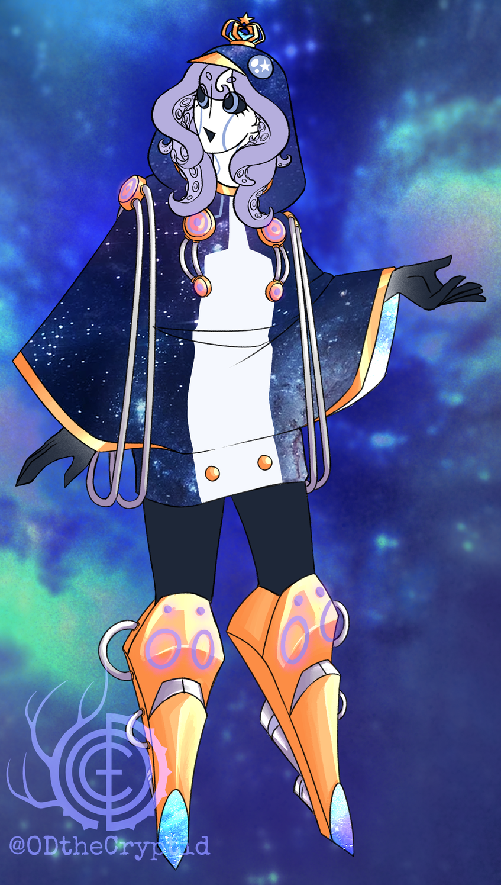

wait, who's pengy?
that's me!
think of "princess pengy" as something similar to your local garage sale—this weird assemblage of bits and pieces that pops up every so often for you to peruse and explore. I do all sorts of things scattered across various places on the internet, such as:
- making video essays on youtube
- posting on cohost
- very occasionally streaming on twitch
- even more very occasionally releasing music on bandcamp
purpose of this blog
kinda just whatever I want, to be honest! I have schemes of writing sporadic review-type posts as part of my "strange gaming diaries" series, as well as writing analytical essays about stuff with a more freeform thoughtflow than my big video essay projects. I might even put some short stories on here once I start writing more of those!
about pengy (the character)
"princess pengy" is also the name of a weird alien girl that I've taken on as my online persona of choice! I like to think of her as something of an alter ego, simultaneously an element of myself while maintaining her own background, quirks, and overall vibes. she was designed by my bestie O.D. the Cryptid, who also drew all of her official reference materials!
pengy is a shapeshifting spacething in the general ballpark of a girl. she regards humanity as a fun role to perform and a costume to put on. she is to planet earth as a bright-eyed stargazer is to the constellations across the sky. the big chunky rocket boots might be seen to some as "completely unnecessary" and "a waste of space-age technology" on account of the fact that she already has the psionic prowess necessary to telekinetically fly, but she insists that the dramatic effect is very important.
she's also known on occasion to transform into a cute, blobby, highly marketable penguin form when the situation demands and/or she feels like it. she's also known to create penguin minions for herself that are in almost all regards identical to her own penguin form. so how can you tell them apart? she's the princess, of course, so only she gets to wear the crown!
hey how'd you do all this?
I used zonelets! it's a super easy to set up series of templates, and the website you get it from has plenty of guides on how to make it work. I wanted a barebones no-frills easy point of entry into blogging, and zonelets provides that super well! would absolutely recommend for any readers who may be intimidated by the prospect of making your own website
after a little while, I expanded on zonelets by using cusdis for comments and implemented the tagging system (and a bunch of other behind-the-scenes stuff) from zonelots! it took some hacking to get cusdis in a state where I could customize its looks, but this guide by moxiecat helped a lot!